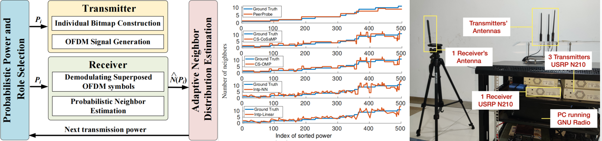
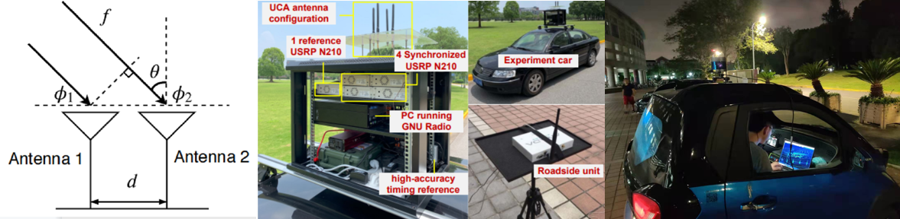
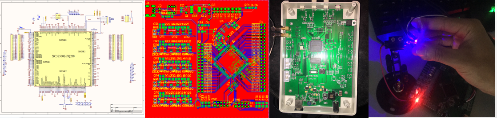

|
Yunxiang Cai , Ph.D. candidate advised by Prof. Hongzi Zhu
Office: SEIEE 3-129 I am on job market and looking for a full-time job. |
2022.11 - I am Awarded the Graduate Excellent Scholarship.
2022.04 - Our paper mmV2V has been accepted to appear in IEEE ICDCS 2022.
2022.02 - Our patent (202110197393.X) has been authorized by CNIPA.
2022.01 - Our paper PeerProbe has been accepted to appear in IEEE/ACM Transactions on Networking (TON).
Sep. 2018 – Present: Ph.D. in Computer Science, Shanghai Jiao Tong University
Sep. 2014 – June 2018: B.S. in Physics, Ocean University of China
Vehicular networks.
Mobile computing.
AI-empowered IoTs.
Neighbor Distribution Estimation in Vehicular Networks. (Finished)
Acquiring the geographical distribution of neighbors can support more adaptive media access control (MAC) protocols and other safety applications in Vehicular ad hoc network (VANETs). However, it is very challenging for each vehicle to estimate its own neighbor distribution in a fully distributed setting. In this project, we propose an online distributed neighbor distribution estimation scheme, called PeerProbe, in which vehicles collaborate with each other to probe their own neighborhood via simultaneous symbol-level wireless communication. An adaptive compressive sensing algorithm is developed to recover a neighbor distribution based on a small number of random probes with non-negligible noise. Moreover, the needed number of probes adapts to the sparseness of the distribution. We further conduct extensive simulations with VENUS simulator and the results demonstrate that PeerProbe is lightweight and can accurately recover highly dynamic neighbor distributions in critical channel conditions. This work is presented in IEEE INFOCOM 2021 (Distributed Neighbor Distribution Estimation with Adaptive Compressive Sensing in VANETs).
Then we modify the proposed method to be more robust and implement a prototype system with four USRP N210 to verify the feasibility of PeerProbe in various typical vehicular channel conditions. Besides, we show two typical use cases to show the potential of the proposed method. This work is accepted to appear in IEEE/ACM TON (PeerProbe: Estimating Vehicular Neighbor Distribution With Adaptive Compressive Sensing). Moreover, one patent of the scheme has been authorized.
We extend the scenario of neighnor discovery problem from V2X communication with DSRC or LTE devices to millimeter-wave vehicular networks and design a one-hop multicasting media access control (MAC) protocol. This work is presented in IEEE ICDCS 2022(mmV2V: Combating One-hop Multicasting in Millimeter-wave Vehicular Networks).
|  |
Supervisor: Prof. Hongzi Zhu.
My contribution: algorithm and system design, simulation, prototype establishment.
Skills: 802.11 protocol simulation (MATLAB & C), prototype with GNU radio (C++ & Python) and USRP.
Online Vehicular Direction Finding based on a Deep Learning Method. (Finished)
Relative direction estimation among neighboring vehicles in an urban environment is essential to a wide variety of driving safety applications. To obtain accurate direction information solely from vehicle-to-vehicle (V2V) communications is desirable but very challenging due to the highly dynamic vehicular environments. In this project, we first propose an online vehicular AoA estimation scheme, called DeepAoA, based on a deep learning method. More specifically, Channel state information (CSI) is estimated from a set of synchronized receiving radios by a receiver vehicle. By taking the CSI phase difference between a pair of such radios, CSI phase errors in baseband can be effectively eliminated, which makes CSI phase difference a compelling feature to represent the direction of incident radio frequency (RF) signals and the dynamic channel characteristics. A convolutional neural network (CNN) model is then trained with labeled samples of CSI phase difference. We implement a prototype of DeepAoA receiver using four synchronized USRPs with their antennas in uniform circular array (UCA) configuration for a full field of view. We collect real-world CSI traces and conduct trace-driven simulations. DeepAoA can achieve AoA estimation errors of less than 3◦ with a 98% confidence interval with four antennas. The results demonstrate the efficacy of DeepAoA in the static scenario. This work is presented in IEEE ICPADS (DeepAoA: Online Vehicular Direction Finding Based on a Deep Learning Method).
After the work of DeepAOA, we find a more fundamental problem in implementation of mobile AI, the domain adaption problem. The trained model cannot deal with dynamic environments. We try to collect a real-world dataset in the dynamic driving scenario and use generative models to conquer the dynamic domain adaption problem. This work is under review.
|  |
Supervisor: Prof. Hongzi Zhu.
My contribution: algorithm and system design (mainly for ground truth acquirement), prototype establishment, dataset collection.
Skills: Generative Models,i.e. VAE & GAN (Python), Object tracking with Lidar (Python), 802.11 protocol simulation (MATLAB & C), prototype with GNU radio (C++ & Python) and USRP.
Smart Traffic Sign for Multimodal Autopilot. (Ongoing)
To be detailed.
Supervisor: Prof. Hongzi Zhu.
My contribution: system design and mplementation.
Skills: object detection and classification with lidar and camera.
Flexible Media Access Control Protocol (MAC) Design in IoVs. (Ongoing)
To be detailed.
Supervisor: Prof. Hongzi Zhu.
My contribution: protocol design.
Skills: trace driven simulation (C)
Circuit Design for Underwater Quantum Key Distribution. (10/2015 - 6/2017, Finished)
This is a National Undergraduate Electronic Design Competition project. I am the leader of this project. Quantum key distribution (QKD) is a secure communication method which implements a cryptographic protocol involving components of quantum mechanics. It enables two parties to produce a shared random secret key known only to them, which can then be used to encrypt and decrypt messages. In this project, we mainly focus on the circuit design of the system. We design a circuit to control the lassers and implement a prototype running under BB84 protocol.
|  |
Supervisor: Prof. Yongjian Gu and Dr. Wendong Li.
My contribution: circuit design, prototype establishment.
Skills: basic knowledge about circuit design (Altium Designer) and FPGA programming (Verilog).
Jiangang Shen, Hongzi Zhu, Yunxiang Cai, Bangzhao Zhai, Xudong Wang, Shan Chang, Haibin Cai and Minyi Guo, mmV2V: Combating One-hop Multicasting in Millimeter-wave Vehicular Networks, in Proceedings of IEEE ICDCS 2022.(CCF-B)[pdf]
Yunxiang Cai, Hongzi Zhu, Shan Chang, Xiao Wang, Jiangang Shen, Minyi Guo, PeerProbe: Estimating Vehicular Neighbor Distribution With Adaptive Compressive Sensing,
IEEE/ACM Transactions on Networking (TON), 30(4), pp. 1703-1716, 2022. (CCF-A) [pdf]
Yunxiang Cai, Hongzi Zhu, Xiao Wang, Shan Chang, Jiangang Shen, Minyi Guo, Distributed Neighbor Distribution Estimation with Adaptive Compressive Sensing in VANETs,
in Proceedings of IEEE INFOCOM, Online Virtual Congress, May 10-13, 2021. (CCF-A)[pdf][video]
Yifeng Zhu, Yunxiang Cai, Hongzi Zhu, Shan Chang, DeepAoA: Online Vehicular Direction Finding Based on a Deep Learning Method,
in Proceedings of IEEE ICPADS, Tianjin, China, December 4-6, 2019. (CCF-C)
A distributed neighbor node distribution estimation method based on adaptive compressed sensing(一种基于压缩感知的邻居节点分布估计方法), 202110197393.X. (Granted on 2/21/2022)
Excellent Graduate Scholarship, 2022
Huawei Scholarship, 2021
First Prize, C4-Network Technology Challenge (基于智能终端的安全语音交互方法与系统), 2021
IEEE INFOCOM Traval Grant, 2021
Best Service Award of LION, 2020, 2021
Best Performance Award of LION, 2020
Outstanding Teaching Assistant of SJTU, 2019, 2020
Outstanding Undergraduate Thesis of OUC (神经网络求解薛定谔方程), 2018
Outstanding Graduates of Shandong province (Top 2% in department), 2018
Outstanding Project, National College Student Innovation and Entrepreneurship Training Program (水下量子通信系统的控制电路设计), 2017
First Prize, National Undergraduate Electronic Design Competition (基于单片机的开关电源), 2016
First Prize, Undergraduate Mathematics Competition of Shandong Province, 2015
Class A Scholarship in Ocean University of China (Thrice, Top 5% in department), 2017, 2016, and 2015
Monitor of Computer Science Ph.D Student, 9/2018-present.
Party Branch Secretary of Computer Science Ph.D Student, 9/2019-3/2021.
Reviewer: Internet of Things Journal (IOTJ), Transactions on Vehicular Technology (IEEE TVT), Peer-to-Peer Networking and Applications (PPNA).
Academic Volunteer: ACM Turing Award Celebration Conference China (ACM TURC), 2018, 2019.
Maintainer of LION Servers.
Programming Methodology(C++) (C++程序设计思想与方法)at Shanghai Jiao Tong University - spring, 2018-2021, Tutor: Hongzi Zhu